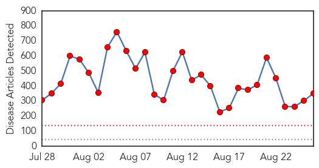
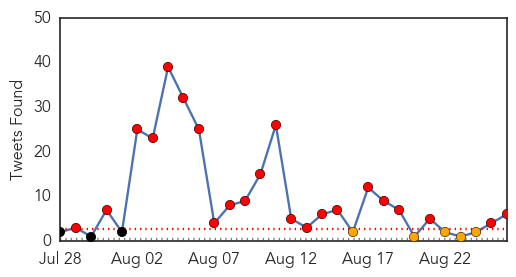
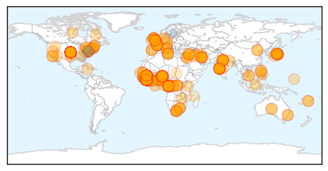
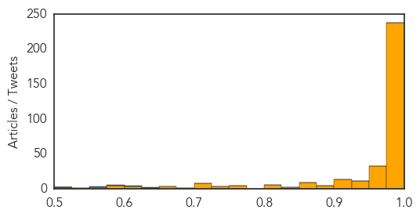
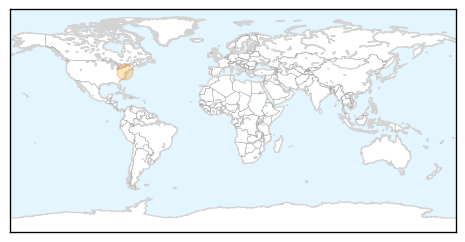
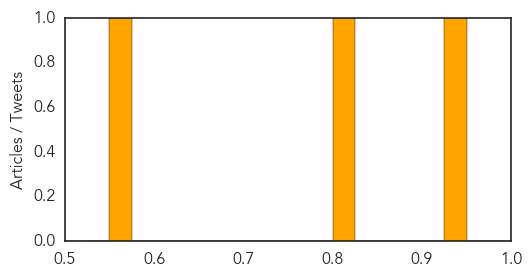

Ebola
30-Day Web Trend
30 alerts, 0 warnings

30-Day Twitter Trend
24 alerts, 3 warnings

Article Locations
Article Confidences
Top Articles:
- 1.000
- Doctors lack knowledge to fight Ebola, says WHO
- 1.000
- Could A 2-Year-Old Boy Be 'Patient Zero' For The Ebola Outbreak?
- 1.000
- British Ebola Patient Arrives at London Hospital
- 1.000
- Flight restrictions hamper ability to battle Ebola, UN cautions
- 1.000
- WHO shuts Sierra Leone lab after worker infected with Ebola
- 1.000
- WHO pulls staff after worker infected with Ebola in Sierra Leone
- 1.000
- Ebola Has ‘Upper Hand’ – The Yeshiva World
- 1.000
- Ebola: health fears stop British journalist from hosting awards
- 1.000
- Ebola has 'upper hand' says US health official
- 1.000
- Ebola has ‘upper hand,’ but experts can stop it: Health official
- 1.000
- WHO pulls staff from Sierra Leone Ebola lab
- 1.000
- MSF sending medical team to DRC after Ebola confirmed
- 1.000
- Battle against Ebola hampered by travel restrictions
- 1.000
- WRAPUP 2-WHO shuts Sierra Leone lab after worker infected with Ebola
- 1.000
- Ebola has 'upper hand,' says US official
- 1.000
- UN envoy says flight bans hindering 'war' on Ebola
- 1.000
- War on Ebola could take six more months
- 1.000
- War on Ebola could take six more months
- 1.000
- Ebola Has 'upper Hand' Says US Health Official
- 1.000
- 'War' on Ebola could take 6 more months - UN
- 1.000
- Could a 2-year-old boy be Ebola 'patient zero'?
- 1.000
- The lessons to be learned here are not specific to Ebola. Outbreaks will happen. They might not be preventable, but they can be quelled.
- 1.000
- Government prepared to tackle Ebola outbreak – Chris Fearne
- 1.000
- Ebola claims Liberian doctor - Africa
- 1.000
- Ebola outbreak: 'Resilient and remarkable' British victim William Pooley administered experimental drug in UK
- 1.000
- Ebola Has The 'Upper Hand'
- 1.000
- Ebola has 'upper hand' says US health official
- 1.000
- Ebola toll on health staff impeding fight
- 1.000
- Second Ebola outbreak: Nearing 1500 dead in West Africa, Congo reports cases
- 1.000
- British Ebola patient to be evacuated from Sierra Leone
- 1.000
- Liberian doctor who received rare Ebola drug ZMapp dies - Emirates 24
- 1.000
- Flight restrictions hamper ability to battle Ebola - Headlines, features, photo and videos from ecns.cn
- 1.000
- Ebola has 'upper hand' says US health official as experts continue to try and halt outbreak
- 1.000
- Unprecedented number of health care workers infected with Ebola
- 1.000
- 240 medical staff so far infected with Ebola: WHO
- 1.000
- China raises precaution against Ebola
- 1.000
- Ebola outbreak: Canadians pulled from Sierra Leone as precaution
- 1.000
- Liberian doctor who received rare Ebola drug ZMapp dies
- 1.000
- LETTER FROM NAIROBI: Ebola outbreak sparks political controversies
- 1.000
- Ebola outbreak: World Health Organisation shuts Sierra Leone laboratory after healthcare worker infected
- 1.000
- Could A 2-Year-Old Boy Be 'Patient Zero' For The Ebola Outbreak?
- 1.000
- WHO: unprecedented number of medical staff infected with Ebola - Xinhua
- 1.000
- Ebola has ‘upper hand’ - Ebola ‘easier to avoid than malaria’: USAID - Kuwait Times
- 1.000
- Ebola has 'upper hand' says US health official - MyNorthwest
- 1.000
- Liberian doctor who received rare Ebola drug ZMapp dies
- 1.000
- WHO shuts Sierra Leone lab after worker infected with Ebola
- 1.000
- Fiji’s Home on the World Wide Web
- 1.000
- WHO sends medical supplies to DRC
- 1.000
- Unprecedented number of medical staff infected with Ebola
- 1.000
- Deadliest Ebola outbreaks since 1976 - Worldnews.com
Showing top 50 articles...
Top Tweets:
- 0.820
- Find out how the Ebola virus is spread: http://t.co/4EczLxf4GC abcDrBchat
- 0.812
- Outbreak of ebola in DRC – initial tests suggest not related to W Africa outbreak; still awaiting confirmation http://t.co/ioDkFVRvru
- 0.778
- Learn how contact tracing can stop the Ebola outbreak w/ new CDC infographic: http://t.co/vrRcMXx2EP
- 0.724
- RT: Learn how contact tracing can stop the Ebola outbreak w/ new CDC infographic: http://t.co/vrRcMXx2EP
- 0.704
- RT: WHO pulls staff after worker infected with Ebola in SierraLeone http://t.co/62bbt02IkN Africa Kailahun
- 0.650
- Fears held over Ebola&39;s spread in worst-ever outbreak http://t.co/X3nWqJpSZj
- 0.640
- RT: CDC director: Ebola ‘still has upper hand.' More than 1,400 people in West Africa have died from it so far. http://t.co/JK…
- 0.639
- RT: With better global response Ebola 'outbreak would be over'. Enormous challenge- @DrFriedenCDC headed to westafrica http:/…
- 0.632
- Ebola updates; Earthquake warning system tested. HealthSecurity http://t.co/H1JhGDbj22
- 0.625
- Not to mention Hypsignathus monstrosus--in whom Ebola virus fragments have been found--aka the Hammerhead Bat, or the Big Lipped Bat.
- 0.617
- Hmm."A hospital setting with low standards of hygiene and sanitation rapidly becomes a source of epidemic amplification." 2012 Ebola review
- 0.590
- RT: Why this outbreak has proven so hard to control: Ebola contacts in Africa go missing by http://t.co/INUPV4G8A7
- 0.502
- RT: Knowing source of Ebola MERS & others critical. What if it's everywhere? My article explores Malassezia: http://t.c…
Influenza
30-Day Web Trend
0 alerts, 0 warnings

30-Day Twitter Trend
3 alerts, 0 warnings

Article Locations
Article Confidences
Top Articles:
Top Tweets:
-
No tweets found for Aug 26, 2014